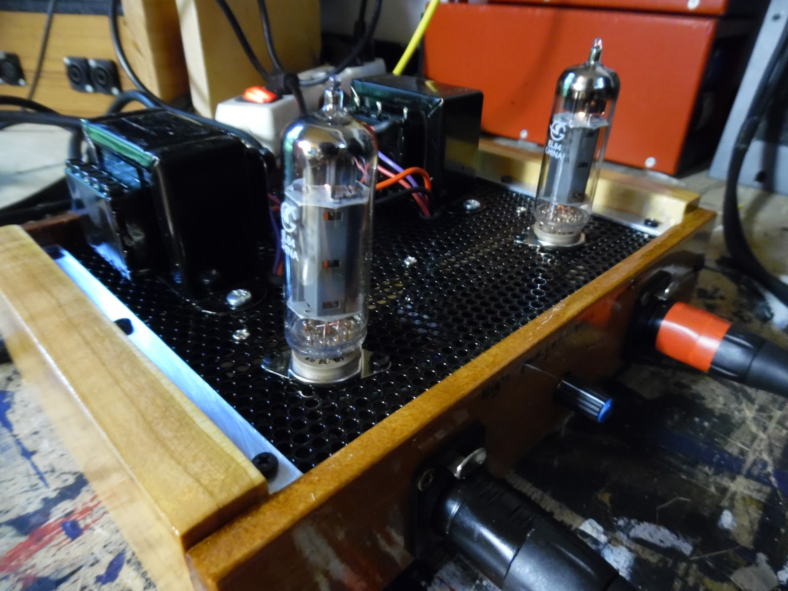
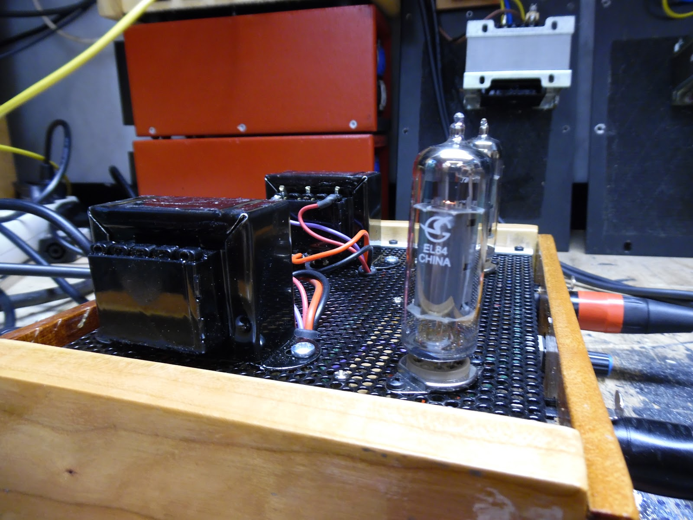
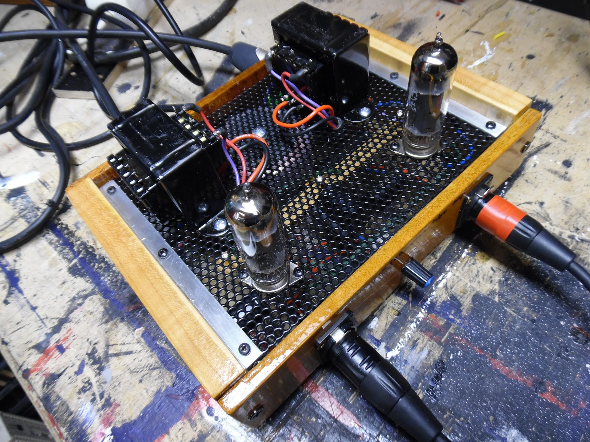

On the bench is a small tube rig with a pair of glowing valves, built to make distortion on purpose. After frequency response, distortion is the thing we still cannot describe properly.
Those friends who know me from real life will have heard me sighing in despair: audio reproduction is all and only about hustling distortions around.
Aside from all the FFT techniques that should be common knowledge by now, we still have a long way to go in having parameters to describe "good sound". First statement: audio passing from one end to another can never be "better". Be it a microphone, loudspeaker or any electronics. So if it can only deteriorate, then audio engineering boils down to manipulating in which way it gets worse. Isn't that sad? 😥
If we manage everything correctly in the frequency domain, as described elsewhere in this blog, then what's left?
Distortion!!
Sure, we all know this should be minimal, shouldn't it? And we all express it as THD — oh wait, let's add N(oise) too. Not a very elaborate way to express what we are trying to study, is it?
And why are all these Waves plug-ins so highly loved and wanted? Tasty spices, also known as harmonic distortion.
Check my current home-brew study object:





